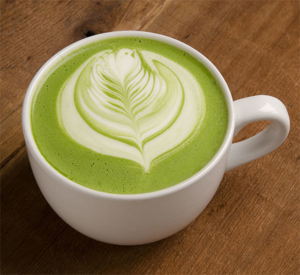

Matcha Latte
Back to Homepage

Matcha latte is a popular japanese drink consisting of matcha powder, milk, and sweetener. It is often
served hot or cold and is known for its vibrant green color and smooth, slightly bitter taste.
Ingredients:
- 1 cup matcha powder
- 1 cup milk
- 1 tbsp sweetener (sugar, honey, etc.)
Instructions:
- Whisk the matcha powder with a small amount of hot water until smooth.
- Add the milk and sweetener, and whisk until well combined.
- Heat the mixture until it reaches your desired temperature.